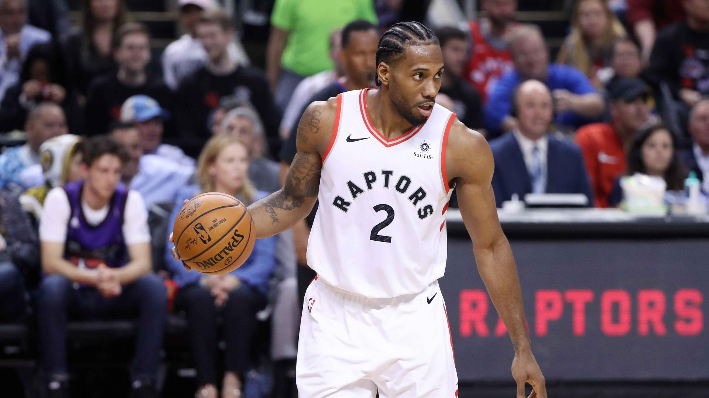

 Raptors controlled the tempo from the begining of the second quarter and onto the second half. Kyle Lowry played like trash, and Marc Gasol was in foul trouble most the game. Kauwi started the second quarter slow, he was too busy busy defending both of the Warriors super scorers in Klay Thompson and Steph; switching on picks occasionally. Siakam carried the Raptors offensively not missing a shot the start of the second half